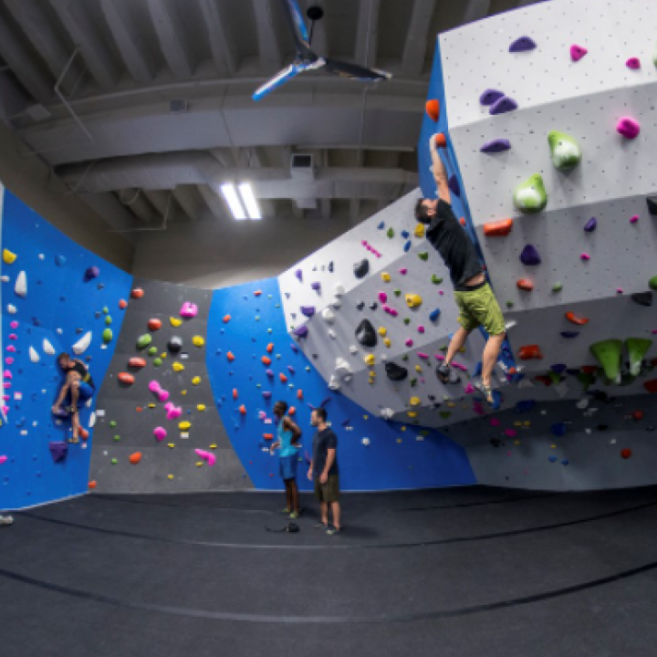

Boulders
Boulders
The block is a climbing style that focuses on power, pure strength and dynamics (climbers speak of "explosivity"): the climber seeks the difficulty of a movement or a short sequence of movements, unlike cliff climbing which generally requires more endurance

The block is often practiced in a specialized room with walls of maximum 4m and surrounded by large mattresses.
it can also be practiced outside using portable mattresses